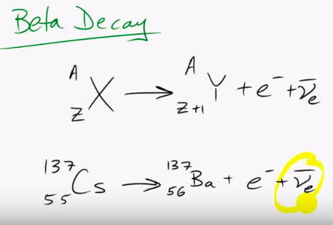

Index
- Section 0
- Section 1 - Nuclear Basics
- Lecture 1.0 - Learning outcomes and technical tour
- 1.1 Atoms and Nuclei
- 1.2 - Nuclear Structure & Nuclear Reactions
- 1.3 Isotopes and Radioactivity
- 1.4 Radiation and Interactions with MAtter
- Section 2 - Neutrons and Fission
2. Lecture 2
Fission & Beta Decay• When fission occurs in a Uranium nuclei, we can only predict the "daughter isotopes" produced, The possible daughters are shown in the table of nuclides, the colours indicate the probability of occurance, the darkest red being most likely.
• The daughter isotopes are commonly described as "Nuclear Waste"
• Using the "Decay Mode" shows which decay mode is associated with which isotopes.
• Uranium Fission produces unstable daughter isotopes, with short half-lives. These isotopes produce "Beta decay", they are underneath the black "curve of stability"
• Daughter isotopes are unstable as the share the same ratio of protons and neutrons as the parent nucleus (U235) - These elements are lighter therefore require less Neutrons for stability,
• The ratio can be described as a straight line between the isotope and the origin of the chart. In the case of U235, this line passes an area of instability.
Because the region of stability is curved, the ratio of protons to neutrons is different as atomic mass increases. this is particularly noticeable with massive nuclei such as U235.
• This is what causes the increased radioactivity of the byproducts. If the line was straight (like the green line in the image.) then the decay elements would be stable.
• Caesium - health concern as body absorbs it in a similar way to potassium and therefore is not expelled quickly.
• Cs137 Has long half life in terms of human lifespan (~30 years). This is longer than isotopes with higher number of neutrons but not too long as to have low activity (low "Becquerel") so essentially exists in a sweet spot for maximum damage to humans.

• The kinetic energy of the new element and the free electron is what generates heat through friction.
• The Electron Neutrino has virtually no interaction with matter and is therefore not of concern.